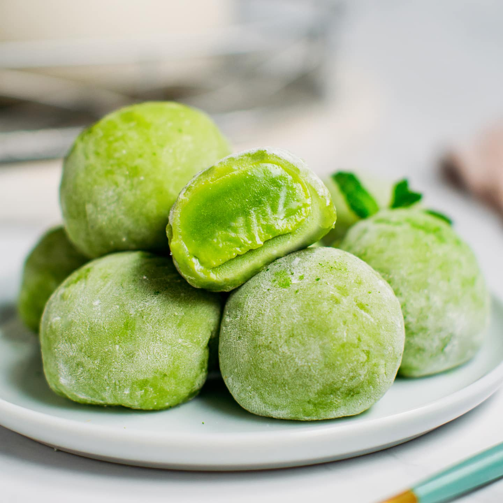

A delightful treat for your taste senses,
our Bilimbi Filled Mochi is perfect for snack
lovers looking for something unique or for
those who crave a tropical twist.
Bilimbi Mochi - SOLO ₱ 10.00 per piece
For 10 pesos, indulge in a single piece of Bilimbi Mochi, a delightful Japanese dessert featuring a tangy-sweet bilimbi fruit paste encased in glutinous rice flour.

Bilimbi Mochi - Bundle ₱ 50.00 per 6 pieces
For 50 pesos, enjoy six pieces of Bilimbi Mochi, each offering the perfect balance of sweet and tangy flavors with the luscious bilimbi fruit filling and soft glutinous rice flour exterior.